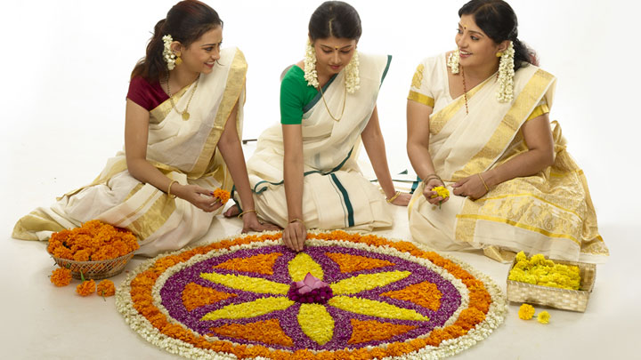
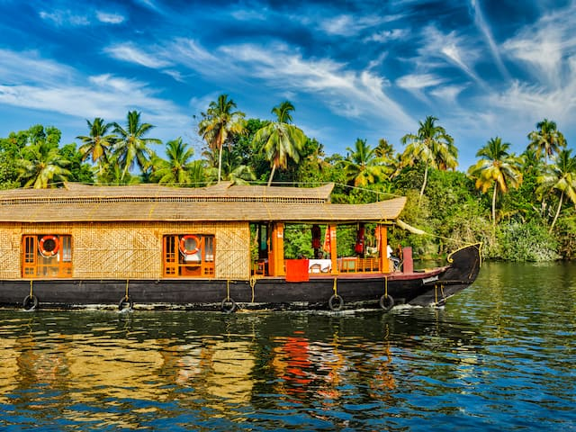

Kerala, located in the southwestern region of India, is often referred to as “God’s Own Country” due to its stunning natural beauty and rich cultural heritage. This state is known for its lush forests, pristine beaches, and serene backwaters. The state is also famous for its traditional dance form, Kathakali, and Ayurvedic medicine. In this essay, we will explore the various aspects of Kerala in detail. Kerala is a state with a rich history and culture. The state is home to various ancient temples, churches, and mosques that are famous for their unique architecture and religious significance. One of the most famous temples in Kerala is the Sabarimala Temple, which is dedicated to Lord Ayyappa. The temple attracts millions of devotees every year, especially during the annual Mandala Pooja festival. Apart from religious sites, Kerala is also known for its beautiful hill stations like Munnar, which are home to vast tea plantations and offer a refreshing break from the hustle and bustle of the city.
 